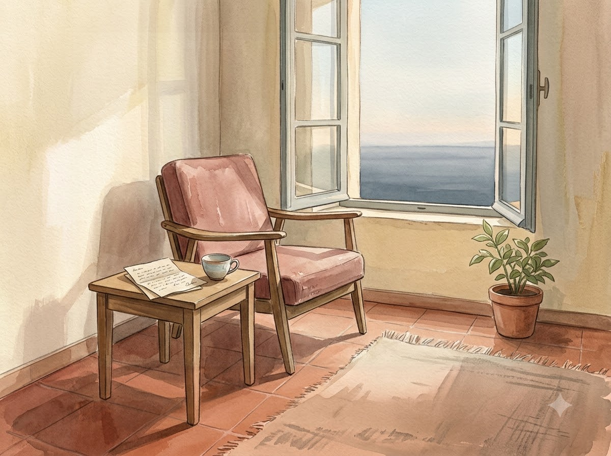
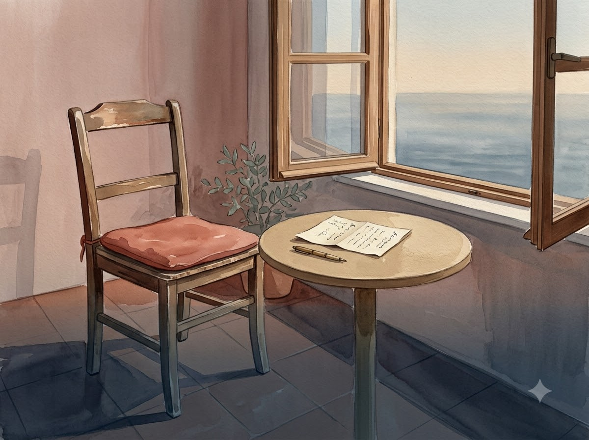
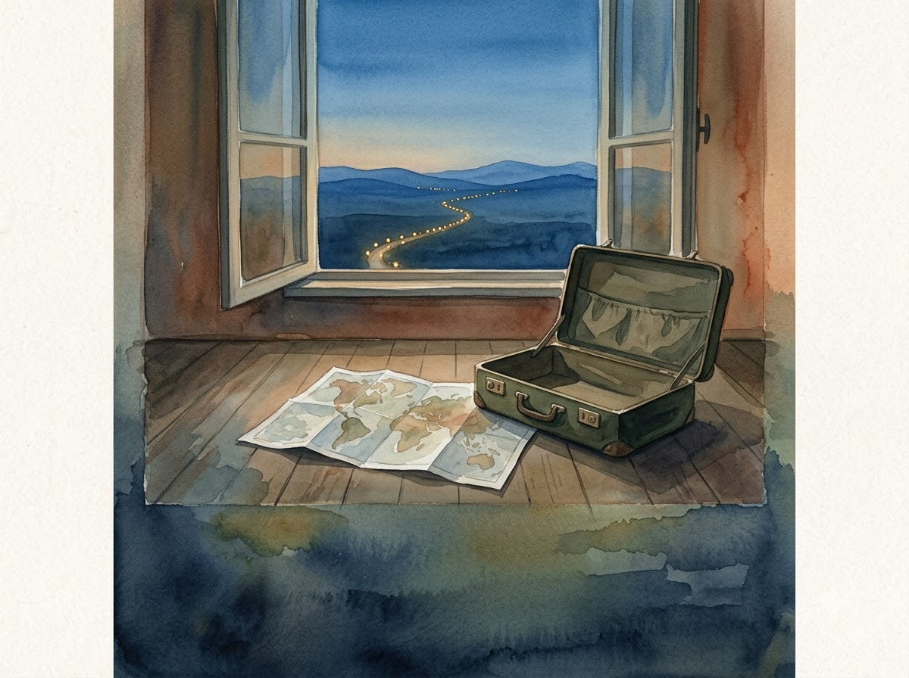
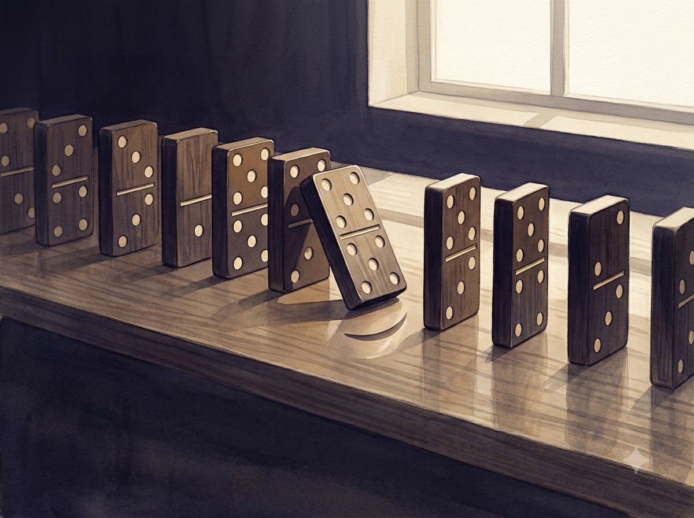
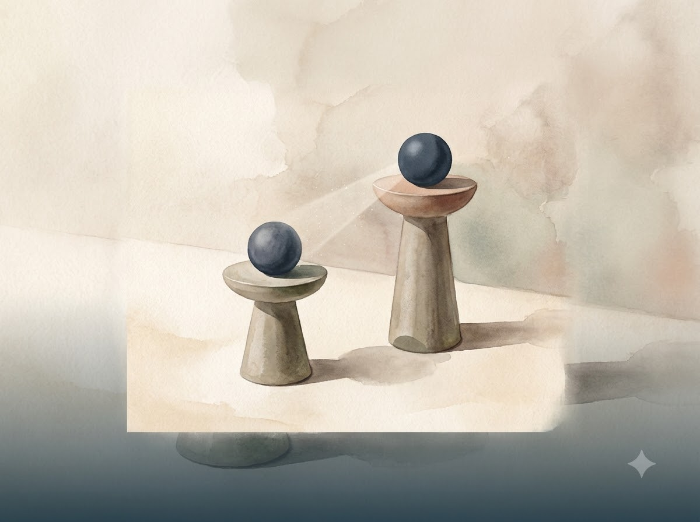
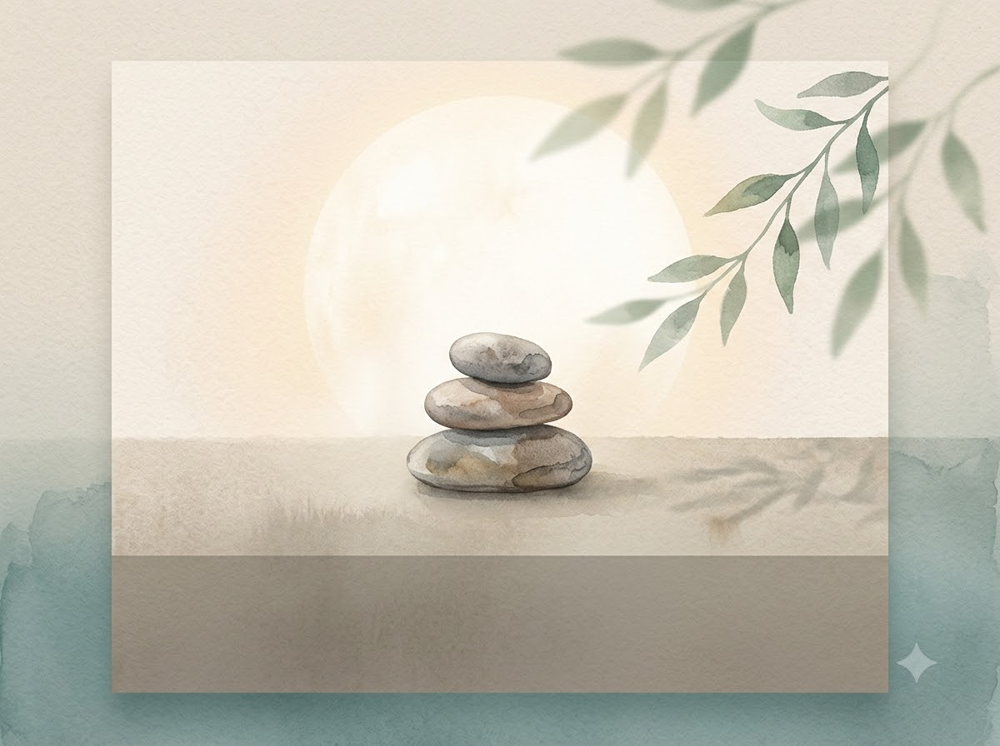

REVIEW CANDIDATEsaudadePortuguês (Brasil) · /sawˈda.dʒi/멀리 있어도 마음 안에서 계속 가까운 것들.C0001-v1Empty chair by open windowf55b295f5700f500…HUMAN_REVIEW_REQUIRED
REVIEW CANDIDATEsaudadePortuguês (Brasil) · /sawˈda.dʒi/멀리 있어도 마음 안에서 계속 가까운 것들.C0001-v2Empty chair with letter by window3f00d6d094e1b08e…HUMAN_REVIEW_REQUIRED
REVIEW CANDIDATESehnsuchtDeutsch · /ˈzeːnˌzʊxt/아직 닿지 않은 삶이 멀리서 나를 부르는 듯한 마음.C0002-v1Open window with map and suitcase10eb9936f751093c…HUMAN_REVIEW_REQUIRED
REVIEW CANDIDATESchadenfreudeDeutsch · [ˈʃaːdn̩ˌfʁɔɪ̯də]누군가의 실패가 뜻밖의 만족으로 스칠 때.C0003-v1Dominoes tipping on tabletop821ed071d0417899…HUMAN_REVIEW_REQUIRED
REVIEW CANDIDATEenvyEnglish (United States) · /ˈen.vi/저 사람의 것을 바라보는 순간, 내게 없는 것이 선명해질 때.C0004-v1Abstract still life representing comparison71f2751838ed8a2e…HUMAN_REVIEW_REQUIRED
REVIEW CANDIDATE幸福日本語 · [ko̞ːɸɯ̟̊kɯ̟]충분하다고 느끼는 순간, 마음이 조용히 밝아질 때.C0005-v1Balanced stones with soft glow3d1b28d342a30d2b…HUMAN_REVIEW_REQUIRED